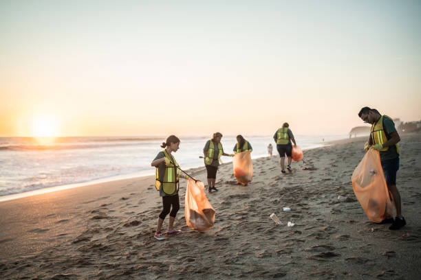

SEJA A MUDANÇA QUE A NOSSA PRAIA PRECISA!
O lixo nas praias não é apenas um problema ambiental: é um desafio coletivo que exige consciência, participação e responsabilidade. O EcoPraia quer incentivar a comunidade a fazer parte dessa mudança por meio de ações voluntárias de limpeza e preservação da orla do Janga. Você não precisa ser especialista em meio ambiente. Basta ter vontade de contribuir, respeitar a natureza e acreditar que pequenas atitudes podem gerar grandes resultados.

Voluntarie-se para limpar a orla
Seja a mudança que o oceano precisa! Inscreva-se como voluntário e junte-se a nós na missão de transformar nossas praias em lugares mais limpos e cheios de vida. Cada mão que ajuda faz a diferença